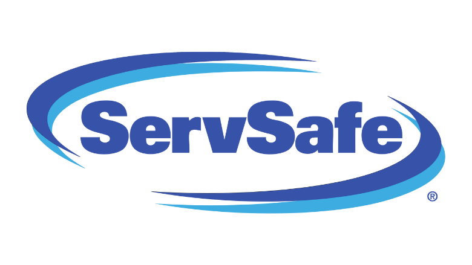
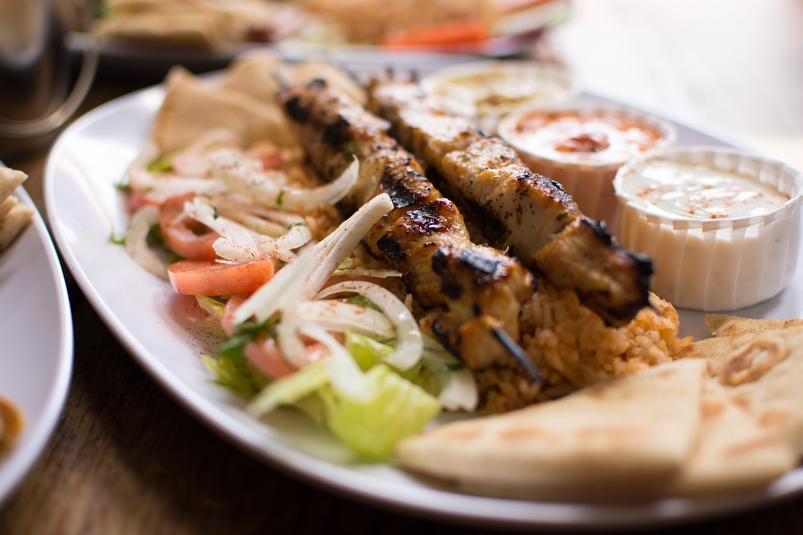

Michelin Star
As of January 1st 2024, Little Lemon was certified with one Michelin Star. This is a big recognition and we will like to thank our loyal customers who always recommend our restaurant and provide feedback on ways to improve our service.
ServSafe Certified

ServSafe is a food safety training program administered by the National Restaurant Association. Restaurants that earn ServSafe certification demonstrate their commitment to safe food handling practices, which is essential for maintaining public health and safety standards. Here at Little Lemon we are committed to always maintaining the highest health standards.
Our Souvlaki's Leaving

Due to the very scarce availability for the ingredients of a proper greek souvlaki, we are very sad to announce that our very famous dish is leaving our menu temporarily. On April 15, the souvlaki will be discontinued.